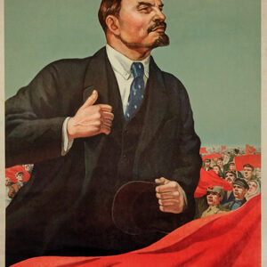
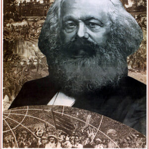

Quando começou ?
União das Repúblicas Socialistas Soviéticas (URSS; em russo: Союз Советских
Социалистических Республик, transliterado como Soyuz Sovetskikh Sotsialisticheskikh Respublik) ou
simplesmente União Soviética (em russo: Советский Союз, transliterado como Sovetskiy Soyuz), foi um
Estado socialista localizado no norte da Eurásia que se estendeu desde os mares Báltico e Negro até o
Oceano Pacífico, e que existiu entre 1917/22 e 1991. Uma união de várias repúblicas soviéticas
subnacionais, a URSS era governada num regime unipartidário comandado pelo Partido
Comunista da União Soviética e tinha como sua capital a cidade de Moscou.
A União Soviética teve suas raízes na Revolução Russa de 1917, que depôs a autocracia imperial. Após a
revolta, os bolcheviques, liderados por Vladimir Lenin, derrubaram o governo provisório que tinha sido
estabelecido. A República Socialista Federativa Soviética Russa foi então criada e a Guerra Civil Russa
começou. O Exército Vermelho entrou em diversos territórios do antigo Império Russo e ajudou os
comunistas locais a tomarem o poder. Em 1922, os bolcheviques foram vitoriosos, formando a União
Soviética, com a unificação das repúblicas soviéticas da Rússia, Ucrânia, Bielorrússia e Transcaucásia.
Após a morte de Lenin em 21 de janeiro de 1924, assumiu o poder a liderança coletiva da troica. Entre o
final de agosto e início de setembro, ocorreria um conflito político conhecido como Revolta de Agosto e
logo depois, naquele mesmo ano, Josef Stalin chegaria ao poder. Stalin associou a ideologia estatal ao
marxismo-leninismo e iniciou um regime de economia planificada. Como resultado, o país passou por um
período de rápida industrialização e coletivização, que lançou as bases de apoio para o esforço de
guerra posterior e para o domínio soviético após a Segunda Guerra Mundial.[12] No entanto, Stalin
reprimiu tanto os membros do Partido Comunista quanto elementos da população através de seu regime
autoritário.
Lenin
Vladimir Ilyich Ulianov, mais conhecido pelo pseudônimo Lenin (português brasileiro) ou Lenine (português europeu)[nt 1] (Simbirsk, 22 de abril de 1870 — Gorki, 21 de janeiro de 1924), foi um revolucionário comunista, político e teórico político russo que serviu como chefe de governo da Rússia Soviética de 1917 a 1924 e da União Soviética de 1922 até sua morte. Sob sua administração, a Rússia e em seguida a União Soviética tornaram-se um Estado socialista unipartidário governado pelo Partido Comunista (PCUS). Ideologicamente marxistas, suas teorias políticas são conhecidas como leninismo. Nascido em uma família de classe média alta em Simbirsk, interessou-se por políticas socialistas revolucionárias após a execução de seu irmão em 1887. Expulso da Universidade Imperial de Kazan por participar de protestos contra o regime czarista do Império Russo, nos anos seguintes graduou-se em direito. Em 1893, mudou-se para São Petersburgo e tornou-se uma importante figura do Partido Operário Social-Democrata Russo (POSDR). Em 1897, foi preso por sedição e exilado para Shushenskoye por três anos, onde casou-se com Nadežda Krupskaja. Após seu exílio, mudou-se para a Europa Ocidental, onde se tornou um teórico de destaque através de suas publicações. Em 1903, assumiu um papel fundamental em uma divisão ideológica do POSDR, liderando a facção bolchevique contra os mencheviques de Julius Martov. Incentivou a insurreição durante a fracassada Revolução Russa de 1905, mais tarde fazendo campanha para que a Primeira Guerra Mundial fosse transformada em uma revolução proletária em escala europeia, que, como marxista, ele acreditava que culminaria no colapso do capitalismo e sua substituição pelo socialismo. Depois que a Revolução de Fevereiro de 1917 derrubou o czar e estabeleceu um Governo Provisório, voltou à Rússia para desempenhar um papel de liderança na Revolução de Outubro, em que os bolcheviques derrubaram o novo regime. 
Karl Marx
Karl Marx[a] (Tréveris, 5 de maio de 1818 – Londres, 14 de março de 1883)[2] foi um filósofo, economista, historiador, sociólogo, teórico político, jornalista, e revolucionário socialista alemão. Nascido em Tréveris, Prússia, Marx estudou direito e filosofia nas universidades de Bona e Berlim. Casou-se com a crítica de teatro e ativista política alemã Jenny von Westphalen em 1843. Devido às suas publicações políticas, Marx tornou-se apátrida e viveu no exílio com a sua mulher e filhos em Londres durante décadas, onde continuou a desenvolver o seu pensamento em colaboração com o pensador alemão Friedrich Engels e a publicar os seus escritos, pesquisando na Sala de Leitura do Museu Britânico. Os seus títulos mais conhecidos são o panfleto Manifesto Comunista de 1848 e o triplo volume O Capital (1867–1883). O pensamento político e filosófico de Marx teve uma enorme influência na história intelectual, económica e política subsequente. O seu nome tem sido usado como adjetivo, substantivo e escola de teoria social. 
Josef Stalin
osef Stalin ou Estaline[1][nota 1] (Gori, 18 de dezembro de 1878 – Moscou, 5 de março de 1953) foi um
revolucionário comunista e político soviético de origem georgiana. Governou a União Soviética (URSS)
de meados da década de 1920 até sua morte, servindo como Secretário Geral do Partido Comunista de
1922 a 1952, e como primeiro-ministro de seu país de 1941 a 1953. Inicialmente presidindo um estado
unipartidário que governava por um sistema de liderança coletiva, consolidou o poder tornando-se o
ditador ou autocrata da União Soviética já na década de 1930. Ideologicamente ligado à interpretação
leninista do marxismo, ajudou a formalizar essas ideias como marxismo-leninismo, enquanto suas
próprias políticas ficaram conhecidas como stalinismo.
Nascido em uma família pobre em Gori, Império Russo, iniciou sua carreira revolucionária após
juntar-se ao Partido Operário Social-Democrata Russo (POSDR) quando jovem. Lá, editou o jornal do
partido, o Pravda, e levantou fundos para a facção bolchevique de Vladimir Lenin por meio de roubos,
sequestros e redes de proteção. Repetidamente preso, sofreu vários exílios internos. Depois que os
bolcheviques tomaram o poder na Rússia durante a Revolução de Outubro de 1917, juntou-se ao comitê
Politburo do partido. Serviu na Guerra Civil Russa antes de supervisionar a criação da União
Soviética em 1922. Quando Lenin adoeceu e morreu em 1924, Stalin gradualmente assumiu a liderança do
país. Durante seu governo, o "Socialismo em um Único País" tornou-se um princípio central dos dogmas
do partido, e a Nova Política Econômica de seu antecessor foi substituída por uma economia
centralizada. Sob o sistema do plano quinquenal, o país passou por uma coletivização e rápida
industrialização, mas sofreu interrupções significativas na produção de alimentos que contribuíram
para a fome entre 1932 e 1933. Para erradicar aqueles considerados "inimigos da classe
trabalhadora", instituiu o "Grande Expurgo", no qual mais de um milhão de pessoas foram presas e
pelo menos 700 mil executados entre 1934 e 1939.